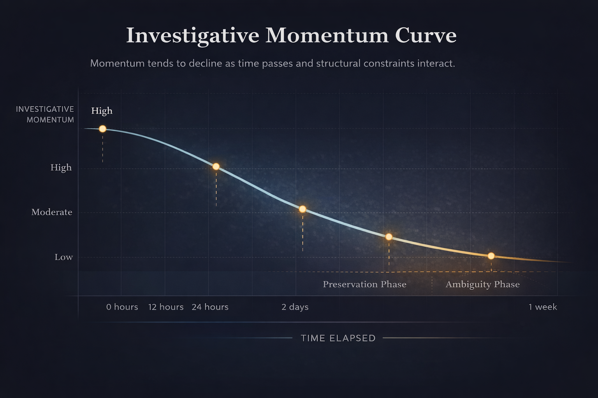

Investigative Trajectory Model
A structural chain linking classification, response speed, preservation, clarity, amplification, elasticity, and resolution probability.
Independent Research Initiative
The Unfound Project examines how classification decisions, response speed, evidence preservation, media amplification, and institutional persistence shape investigative trajectory.
Disappearance may be unpredictable.
Response architecture is not.
Core Analytical Model
Missing persons investigations follow a structural trajectory shaped by classification decisions, response speed, evidence preservation, investigative clarity, public amplification, and long-term investigative elasticity.
Research Exhibits
The Unfound Project uses visual models to clarify how investigative outcomes diverge through speed, preservation, visibility, and long-term structural constraint.
A structural chain linking classification, response speed, preservation, clarity, amplification, elasticity, and resolution probability.

A visual representation of how cases lose momentum over time as evidence, witness clarity, and public attention begin to narrow.
A forthcoming model showing how digital and physical evidence windows shrink across the early investigative period.
A forthcoming visual model examining how uncertainty expands as terrain, time delay, and movement assumptions widen the search field.
Methodology
The Unfound Project applies systems analysis to missing persons investigations. Rather than focusing primarily on narrative reconstruction, the project evaluates institutional processes, decision architecture, and structural constraints that shape investigative trajectory over time.
The goal is to understand why some cases retain momentum while others narrow rapidly under conditions of ambiguity, evidence loss, fragmented coordination, and limited visibility.
Analyzing how cases evolve through identifiable structural stages.
Examining the timing and durability of digital, physical, and testimonial evidence.
Evaluating how uncertainty, terrain, and timing affect search expansion.
Studying how public visibility changes investigative reach and elasticity.
Assessing how fragmented systems influence continuity, clarity, and response speed.
Identifying leverage points where structural reform could reduce preventable erosion.
Project Status
The Unfound Project is an ongoing research initiative examining the institutional architecture of missing persons response in the United States.
The core manuscript examining structural divergence in missing persons investigations.
Development of visual analytical frameworks describing how cases gain or lose momentum.
Ongoing publication of case studies used as analytical illustrations rather than narrative retellings.
Expansion of research into evidence preservation, alert systems, and investigative infrastructure.
The Book
Every year, hundreds of thousands of missing persons reports are filed in the United States. Yet investigative outcomes diverge sharply. Some cases generate rapid coordination and sustained attention. Others narrow quickly under conditions of ambiguity, fragmentation, and silence.
Unfound America examines the structural architecture behind those outcomes.
Rather than retelling individual disappearances as isolated mysteries, the book analyzes the systems that determine investigative trajectory: how initial response speed narrows evidence windows, how reporting frameworks influence visibility, how inter-agency coordination affects momentum, and how public amplification reshapes investigative elasticity over time.
Project Premise
Some cases generate rapid coordination, sustained public attention, and durable investigative momentum. Others narrow quickly. The Unfound Project focuses on the structural variables that shape those outcomes.
Framework
Initial framing influences urgency, escalation, and how risk is interpreted.
Time governs what can still be preserved, requested, and reconstructed.
Digital and physical evidence deteriorate quickly when early action does not occur.
Public attention expands visibility and may increase actionable information.
The Book
The Architecture of Missing Persons Response
A systems-based examination of how institutional design influences missing persons investigations across classification, evidence retention, search probability, and long-term investigative persistence.
Go to Book PageCase Archive
Cases are presented as analytical illustrations rather than narrative true crime retellings.
Adult disappearance with minimal evidence and early ambiguity.
Surveillance density without continuity.
Partial visual evidence that generated momentum while preventing resolution.
Research Areas
About
The project avoids sensationalism and focuses on mechanism, structure, institutional friction, and investigative probability.